Github Basics
Основы Git: коммиты, ветки, слияние, удалённые репозитории.
-
Git
Git — это система управления версиями, которая позволяет отслеживать изменения в коде, сохранять историю разработки и работать над проектом в команде.
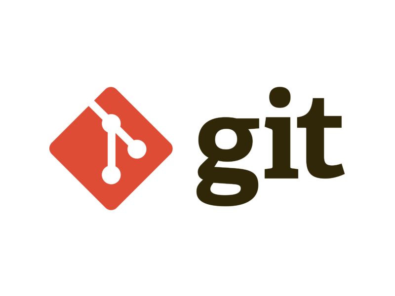
Links
Ресурс Описание Git. Большой практический выпуск Артем Матяшов / video/ intro / Rus / 98 minХорошая стартовая точка. После просмотра можно спокойно начать работу с Git Чем Git отличается от GitHub?
Git — локальная система контроля версий; GitHub — хостинг репозиториев и инструменты совместной работы поверх Git.
Зачем фиксировать историю изменений, а не просто копировать папку проекта?
Можно откатиться к любой версии, сравнить правки, работать параллельно в ветках и видеть, кто и зачем менял код.
Что хранится в каталоге
.git?Объекты коммитов, ссылки на ветки и теги, конфигурация репозитория — вся история и метаданные.
Почему Git полезен в команде, а не только соло?
Общий remote, ветки и PR позволяют синхронизировать работу без перезаписи файлов друг друга.
-
GitHub Desktop
GitHub Desktop — официальное приложение с графическим интерфейсом для работы с Git и GitHub без командной строки.
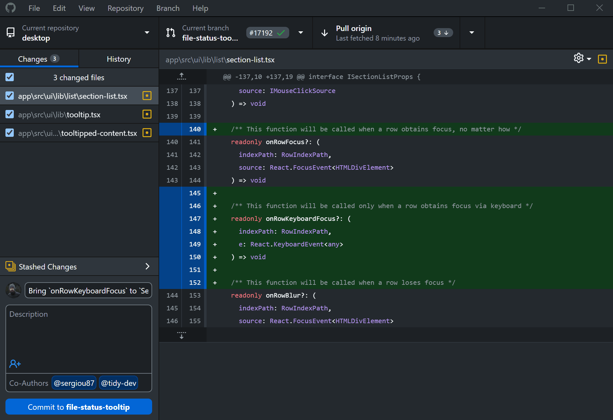
Если вы предпочитаете визуальный интерфейс, хотите быстро видеть диффы и управлять ветками без терминала.
Можно перетащить проект в окно GitHub Desktop, сделать commit, выбрать ветку и нажать Push origin.
GitHub Desktop поддерживает drag-and-drop, автоматические синхронизации и интеграцию с редакторами кода.
Меняет ли GitHub Desktop логику Git под капотом?
Нет — это GUI над теми же коммитами, ветками и remotes; репозиторий остаётся совместимым с CLI.
Что удобнее делать в Desktop новичку?
Визуально смотреть diff, переключать ветки, коммитить и пушить без запоминания флагов.
Можно ли после работы в Desktop продолжить в терминале?
Да —
.gitодин и тот же; командыgit statusпокажут те же изменения.Чего Desktop обычно не заменяет полностью?
Сложный rebase, разрешение тяжёлых конфликтов, скрипты CI и продвинутую автоматизацию.
-
Полезные расширения для VS Code
Расширения (extensions) в VS Code позволяют добавить поддержку языков, систем контроля версий, форматирования и интеграции с платформами вроде GitHub или Jupyter.
Название Описание Когда использовать GitHub Официальное расширение для интеграции с GitHub: Issues, репозитории, организации прямо из редактора. Если активно работаете с GitHub-репозиториями без перехода в браузер. GitLens Показывает историю изменений в коде, авторов строк, коммиты. Для глубокого анализа истории коммитов и отслеживания авторства. GitHub Actions Просмотр и перезапуск CI/CD-воркфлоу прямо из VS Code. Если используете GitHub Actions и хотите управлять ими из редактора. GitHub Pull Requests Создание, комментирование и мёрдж Pull Requests из редактора. Удобно для ревью и комментариев прямо в VS Code. Jupyter Поддержка Jupyter Notebook ( .ipynb) — запуск ячеек, вывод графиков.При работе с данными и ML-экспериментами в формате Notebook. Python Официальное расширение Microsoft: подсветка, автодополнение, отладка, linting. Основное расширение для Python-разработки. Rainbow CSV Подсвечивает столбцы в CSV/TSV-файлах разными цветами. Если часто работаете с табличными данными. YAML Поддержка синтаксиса YAML, подсказки по ключам и валидация схем. При работе с конфигами, CI/CD и Docker-описаниями. Even Better TOML Расширенная подсветка и валидация TOML-файлов. Для проектов с Poetry, Pydantic или конфигами в TOML. Все перечисленные расширения можно установить через Marketplace прямо в VS Code: откройте панель Extensions (
Ctrl + Shift + X) и введите название плагина. Рекомендуется также включить автообновление расширений.Зачем расширение GitHub Pull Requests в VS Code?
Смотреть и комментировать PR, проходить review не выходя из редактора.
Что даёт GitLens поверх встроенного Git в VS Code?
Blame, история строки, сравнение веток и наглядная аннотация авторов.
Зачем расширение GitHub Actions в репозитории с CI?
Просмотр статусов workflow и логов запусков рядом с кодом.
Меняют ли расширения сами коммиты в
.git?Нет — они вызывают Git или API GitHub; история остаётся стандартной.
-
Отличия GitHub и GitLab
GitHub и GitLab — это платформы для хостинга репозиториев Git, управления версиями, CI/CD и совместной разработки. Обе поддерживают схожие функции, но различаются по архитектуре, философии и возможностям кастомизации.
Параметр GitHub GitLab Основная цель Фокус на сообществе, open-source и коллаборации Фокус на DevOps, CI/CD и корпоративной инфраструктуре Тип платформы Проприетарная (принадлежит Microsoft) Open-source, можно развернуть на своём сервере CI/CD Через GitHub Actions Встроенный GitLab CI/CD — один из самых зрелых инструментов Развёртывание Хостится в облаке, self-host только через GitHub Enterprise Облачный сервис и self-host (GitLab CE / EE) Pull / Merge Requests Pull Requests Merge Requests — аналогичный механизм Управление задачами Issues, Projects, Discussions Полноценные Agile-инструменты: доски, спринты, milestones Интеграции VS Code, Copilot, Actions Marketplace Jira, Kubernetes, Prometheus, CI/CD-пайплайны Приватные репозитории Бесплатны для отдельных пользователей Бесплатны во всех версиях, включая self-hosted Когда выбирать Open-source, стартапы, public-проекты Корпоративные проекты, DevOps-пайплайны, собственный сервер - GitHub — проще в использовании, идеально подходит для открытых проектов и интеграции с экосистемой Microsoft.
- GitLab — мощнее в плане CI/CD, контроля доступа и автономного развёртывания.
Обязательно ли менять Git при переходе с GitHub на GitLab?
Нет — Git локальный; меняется хостинг, CI и интерфейс (PR $\leftrightarrow$ MR).
Чем GitHub Actions отличается от GitLab CI на уровне идеи?
Оба запускают pipeline по событиям в репозитории; синтаксис и встроенность в платформу разные.
Когда чаще выбирают self-hosted GitLab?
Нужен полный контроль внутри периметра компании и единый DevOps-стек на своих серверах.
Что остаётся одинаковым на обеих платформах?
Модель репозитория, ветки, merge/rebase, code review и интеграция с issue-трекером.
-
Diff
Diff (от "difference" — различие) — это процесс сравнения двух версий файлов, позволяющий увидеть, какие строки были добавлены, удалены или изменены.
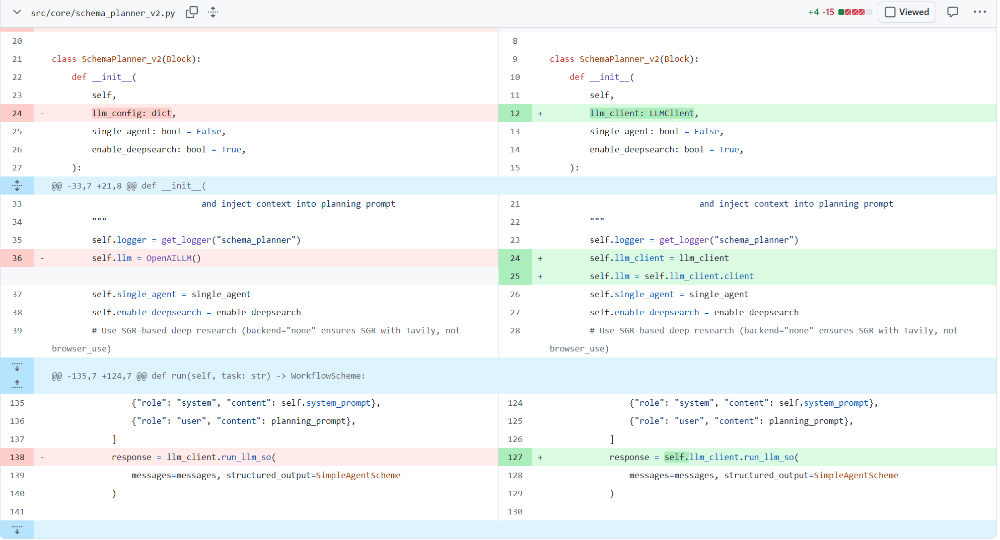
В системах контроля версий команда
git diffпозволяет посмотреть, какие изменения были сделаны в рабочих файлах относительно сохранённой версии.- Строки, которые были добавлены, отмечаются знаком
+(зелёным цветом). - Удалённые строки — знаком
-(красным цветом). - Изменённые строки отображаются как удаление старой и добавление новой строки.
Diff можно применять к отдельным файлам, папкам, диапазонам коммитов и для просмотра разницы между ветками.
Diff используют для обзора изменений перед коммитом, при код-ревью, при разрешении конфликтов слияния или для поиска ошибок, попавших в код.
git diff— показать текущие незакоммиченные изменения.git diff HEAD~1 HEAD— сравнить два последних коммита.git diff main feature/branch— показать различия между двумя ветками.
Что показывает
git diffбез аргументов?Разницу между рабочим каталогом и индексом — что изменено, но ещё не застейджено.
Чем
git diff --stagedотличается от обычногоgit diff?--stagedсравнивает индекс с последним коммитом — что уже готово к коммиту.Как посмотреть diff между двумя коммитами?
git diff <старый> <новый>илиgit show <коммит>для одного коммита.Зачем смотреть diff перед коммитом?
Чтобы не закоммитить отладочный код, секреты или случайные правки в чужих файлах.
- Строки, которые были добавлены, отмечаются знаком
-
Установка и настройка Git
Начальная конфигурация Git нужна, чтобы коммиты подписывались вашим именем и email, а формат вывода и поведение команд были удобными.
Сразу после установки Git на новом компьютере или сервере.
git --version git config --global user.name "Ваше Имя" git config --global user.email "you@example.com" git config --global init.defaultBranch main git config --global pull.rebase false git config --list --show-originБез имени и email Git не позволит создать коммит. Параметр
init.defaultBranchзадаёт имя основной ветки по умолчанию.Зачем настраивать
user.nameиuser.email?Эти поля попадают в метаданные каждого коммита и идентифицируют автора в истории.
Что делает
git config --global init.defaultBranch main?Новые репозитории по умолчанию создают основную ветку с именем
main.Чем отличается
--globalот локальной настройки в репозитории?--globalдействует для всех репозиториев пользователя; локальныйgit configбез флага переопределяет глобальный только в текущем проекте.Как проверить, что Git установлен и настроен?
git --versionиgit config --list --show-origin.
-
Инициализация репозитория
Репозиторий Git — это папка проекта с поддиректорией
.git, где хранится вся история изменений.Начало нового проекта или перенос существующего кода под контроль версий.
mkdir my-project && cd my-project git init ls -la .gitЕсли сейчас тебя смущают команды Linux, то можешь глянуть Linux Basics.
После
git initв каталоге появится скрытая папка.git, содержащая объекты, ссылки и настройку.Что создаёт команда
git init?Пустой репозиторий Git: каталог
.gitс начальной веткой и без коммитов.Чем
git initотличается отgit clone?initначинает репозиторий с нуля локально;cloneкопирует уже существующий remote со всей историей.Почему первый коммит иногда называют «initial commit»?
До него в репозитории нет зафиксированной истории — это корень дерева коммитов.
Что увидит
git statusсразу послеgit initв пустой папке?Сообщение, что ветка создана, но коммитов ещё нет; неотслеживаемые файлы, если они уже лежат в каталоге.
-
git statusgit statusпоказывает состояние рабочей директории и индекса (staging area).Чтобы понять, какие файлы изменены, добавлены или ожидают коммита.
git status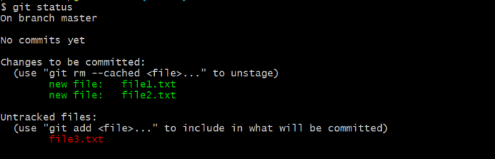
Какие три состояния файла показывает
git status?Отслеживаемый/неотслеживаемый, изменённый в рабочем каталоге, подготовленный к коммиту (staged).
Что означает «Changes to be committed»?
Файлы уже в индексе и войдут в следующий
git commit.Как узнать текущую ветку из терминала?
Первая строка вывода
git statusилиgit branch --show-current.Почему
git status— первая команда при «что-то пошло не так»?Она показывает, на какой ветке вы находитесь и какие файлы в каком состоянии — без догадок.
-
git addgit addдобавляет изменения из рабочей директории в индекс (staging area) для подготовки к коммиту.После изменения или создания файлов, которые хотите включить в следующий коммит.
git add file.txt # добавить конкретный файл git add . # добавить все изменения в текущей директории git add *.py # добавить все .py файлыИзменили
index.htmlиstyle.css$\to$git add index.html style.css.Что делает
git addс точки зрения трёх деревьев Git?Копирует выбранные изменения из рабочего каталога в индекс (staging area).
Чем
git add file.pyотличается отgit add .?Первая команда стейджит один файл; вторая — все изменения в текущем каталоге и подкаталогах.
Можно ли частично добавить правки внутри одного файла?
Да, через
git add -p(интерактивный выбор hunks).Попадёт ли в коммит файл, который вы изменили, но не добавили через
git add?Нет — в коммит идёт только то, что уже в индексе.
-
git commitКоммит — это зафиксированный снимок состояния проекта в определённый момент времени с сообщением, автором и уникальным идентификатором (hash).
Каждый раз, когда завершена логическая единица работы (фикс бага, добавление фичи, изменение документации).
git commit -m "Краткое и понятное сообщение"Названия коммитам надо давать так, чтобы из истории легко понять, что сделано. Лучше написать
"Fix login redirect bug"или"Add user profile API", чем"upd","fix","add"без дополнительных объяснений.Что такое коммит в Git?
Неизменяемый снимок дерева файлов с сообщением, автором, датой и ссылкой на родительский коммит.
Зачем писать осмысленное сообщение коммита?
Через месяцы по
git logдолжно быть понятно, зачем была сделана правка, без чтения всего diff.Чем
git commit -m "..."отличается от коммита без-m?С флагом сообщение передаётся сразу; без него откроется редактор для ввода текста.
Можно ли изменить уже созданный коммит, не трогая файлы?
Да, локально —
git commit --amend(осторожно, если коммит уже запушен).
-
Ветки
Ветка — это указатель на определённый коммит, позволяющий вести параллельную разработку, не мешая основной линии.
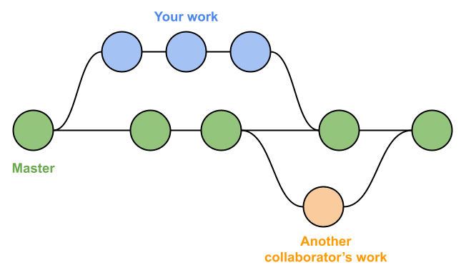
Для изоляции разработки фич, исправлений или экспериментов.
git branch # список веток git checkout -b feature/login # создать ветку от текущейВетка
main— стабильная версия;feature/cart— разработка корзины покупок.Что такое ветка в Git на самом деле?
Подвижный указатель на коммит; новые коммиты сдвигают указатель ветки вперёд.
Зачем вести фичу в отдельной ветке, а не в
main?Изоляция работы, параллельная разработка и ревью через PR без блокировки основной линии.
Что произойдёт с веткой
feature/xпосле успешного merge вmain?Указатель
mainпродвинется;feature/xможно удалить, история коммитов останется вmain.Как посмотреть список локальных веток?
git branchилиgit branch -aвместе с remote-tracking ветками.
-
git checkoutgit checkoutпереключает HEAD на другую ветку или коммит; флаг-bсоздаёт ветку и сразу переходит в неё.Чтобы переключиться между ветками или начать разработку новой фичи в отдельной ветке.
git checkout develop # перейти в существующую ветку git checkout -b feature/chat # создать и перейтиgit checkout -b fix/login-bugсоздаёт ветку для фикса багов логина.Что делает
git checkout main?Переключает HEAD и рабочий каталог на ветку
main.Что делает
git checkout -b feature/login?Создаёт ветку
feature/loginот текущего коммита и сразу переключается на неё.Почему Git может отказать в checkout при незакоммиченных изменениях?
Переключение перезапишет файлы; Git защищает от потери несохранённой работы (нужен commit, stash или discard).
Чем
git switchсвязан сgit checkout?git switch— более узкая современная команда только для переключения веток;checkoutумеет и ветки, и отдельные файлы.
-
git fetchиgit pullgit fetchполучает новые данные с удалённого репозитория, но не сливает их в текущую ветку.git pull=git fetch+ автоматическое слияние или rebase в текущую ветку.fetch— когда хотите посмотреть, что изменилось, без изменения своей ветки.pull— когда готовы подтянуть изменения в свою ветку.
git fetch origin main # посмотреть, что нового на удалённом main git pull origin main # подтянуть и слить в локальный mainВы работаете над фичей, но хотите убедиться, что ваша ветка свежая:
git pull origin feature/x.Обновляет ли
git fetchваши локальные файлы в рабочем каталоге?Нет — только скачивает объекты и обновляет remote-tracking ветки; рабочие файлы не трогает.
Из чего состоит
git pull?git fetchплюс слияние (merge) или rebase в текущую ветку — зависит от настроек.Когда безопаснее сначала
fetch, а не сразуpull?Когда хотите посмотреть чужие коммиты (
git log origin/main) до слияния в свою ветку.Что может пойти не так после
git pullпри параллельных правках?Merge-конфликт, если вы и коллега меняли одни и те же строки.
-
Базовый алгоритм работы
Изменения проходят через индекс (staging area) перед фиксацией в истории — это позволяет контролировать, что попадёт в коммит.
git status git add <файл> # добавить конкретный файл git add . # добавить все изменения в каталоге git commit -m "Краткое сообщение коммита" git log --oneline --graph --decorate -n 5git addготовит изменения к коммиту,git commitзаписывает их в историю с сообщением.Чем рабочий каталог отличается от индекса (staging area)?
В рабочем каталоге вы редактируете файлы; в индексе лежит снимок того, что попадёт в следующий коммит.
Какой минимальный цикл сохраняет одну правку в историю?
Изменить файл $\to$
git add$\to$git commit$\to$ при необходимостиgit push.Зачем смотреть
git statusперед коммитом?Чтобы убедиться, что в коммит попадут нужные файлы, а лишние — нет.
Что произойдёт, если сделать
git commitбезgit add?Новые или изменённые файлы не попадут в коммит, если они не были ранее застейджены.
-
.gitignoreФайл
.gitignoreперечисляет пути и маски, которые Git не должен отслеживать (сборки, секреты, временные файлы).Сразу при старте проекта, чтобы мусор не попал в репозиторий.
Игнорирование
.venvпредотвращает случайную публикацию виртуальной среды,.pth— весов моделей и т.д.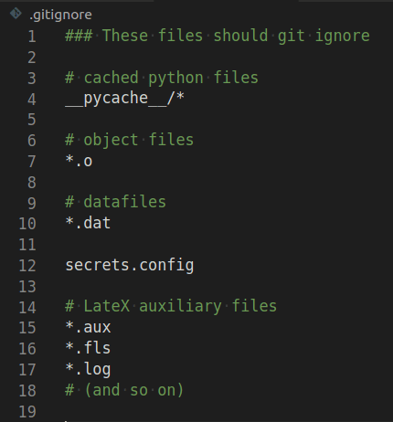
Влияет ли
.gitignoreна уже отслеживаемые файлы?Нет — для них нужно сначала убрать из индекса (
git rm --cached), иначе ignore не сработает.Зачем игнорировать
.venv/и артефакты сборки?Они воспроизводимы локально, раздувают репозиторий и не должны попадать в историю.
Можно ли закоммитить секрет, если он прописан в
.gitignoreслишком поздно?Да, если файл уже был в Git — ignore не удалит его из истории автоматически.
Где обычно лежит корневой
.gitignore?В корне репозитория; правила применяются рекурсивно к подкаталогам.
-
Просмотр истории и различий
Историю можно просматривать по-разному: кратко, с графом веток, с указанием авторов, диффов и т.д.
git log --oneline -5 # покажет 5 последних коммитов git show HEAD git diff # несохранённые изменения git diff --staged # то, что уже в индексеКогда нужно понять, что изменилось, кто и когда внёс правки.
Что выводит
git log --oneline?Краткий список коммитов: укороченный hash и первая строка сообщения.
Зачем нужен
git log --graph?Визуально показывает ветвления, merge и rebase в истории.
Чем
git show HEADполезен при разборе последнего коммита?Показывает метаданные коммита и полный diff изменений этого коммита.
Как найти, кто последним менял строку в файле?
git blame <файл>— построчная привязка к коммитам и авторам.
-
Слияние и разрешение конфликтов
git mergeобъединяет изменения из другой ветки. При конфликте Git помечает конфликтующие участки в файлах.git checkout main git merge feature/loginЕсли одна и та же строка изменена по-разному в двух ветках, возникает конфликт, который нужно решить вручную.
Когда возникает merge-конфликт?
Когда Git не может автоматически совместить правки в одних и тех же участках файла из двух веток.
Как выглядят маркеры конфликта в файле?
Блоки
<<<<<<<,=======,>>>>>>>с версиями «нашей» и «их» стороны.Что делать после ручного исправления конфликта?
Удалить маркеры, проверить код,
git addисправленные файлы и завершить merge/rebase коммитом.Можно ли отменить merge, который ещё не закоммичен?
Да —
git merge --abort(илиgit rebase --abortпри конфликте в rebase).
-
Удалённый репозиторий
Основные команды при работе с удалёнными репозиториями:
origin(имя удалённого),fetch(загрузить изменения),pull(загрузить и объединить),push(отправить свои коммиты на сервер).Удалённый репозиторий — это копия вашего проекта на сервере (например, GitHub), используемая для совместной работы.
git remote add origin https://github.com/user/repo.git git remote -v # проверить, что remote добавлен git push -u origin main # первый пуш и установка upstream ... git fetch origin # получить обновления git pull origin # получить и слить в текущую веткуКогда связываете локальный проект с GitHub или подтягиваете изменения коллег.
Что такое remote в Git?
Именованная ссылка на URL репозитория на сервере (обычно
originна GitHub).Зачем нужен
git push -u origin mainпри первом пуше?Отправляет коммиты на сервер и настраивает upstream, чтобы дальше хватало
git push/git pull.Чем
git fetchотличается отgit push?fetchтолько скачивает объекты с remote;pushотправляет ваши локальные коммиты на remote.Как посмотреть настроенные remotes?
git remote -v— имена и URL для fetch/push.
-
Клонирование и форки
git cloneкопирует существующий репозиторий. Форк — ваша копия чужого репозитория в аккаунте GitHub.git clone https://github.com/owner/project.git cd project git remote -v # Для форка: форкните на GitHub, затем: git clone https://github.com/yourname/project.git git remote add upstream https://github.com/owner/project.git git fetch upstream git merge upstream/main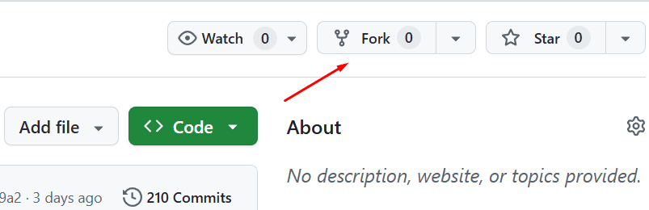
Форк можно сделать без головной боли на GitHub через UI Чем fork на GitHub отличается от
git clone?Fork — копия репозитория в вашем аккаунте на сервере; clone — локальная копия на диск.
Зачем при работе с чужим проектом добавлять remote
upstream?Чтобы подтягивать обновления из оригинального репозитория, не смешивая их с вашим fork на GitHub.
Какой типичный порядок: fork $\to$ clone $\to$ правки $\to$ PR?
Форк на GitHub $\to$
git cloneсвоего fork $\to$ ветка $\to$ push в свой fork $\to$ PR в upstream.Содержит ли
git cloneвсю историю коммитов?Да, по умолчанию клонируется полная история и настраивается
origin.
-
Pull Request (PR)
PR — запрос на добавление ваших изменений в целевую ветку репозитория, с обсуждением и проверками.
Каждый раз, когда завершаете задачу в отдельной ветке и хотите объединить её в
mainили релиз-ветку.Залейте ветку на GitHub (
git push origin feature/x) $\to$ откройте PR $\to$ дождитесь review и CI $\to$ merge.Кроме обозначения PR можно встретить термин "Merge Request" (MR). Это одно и то же, просто исторически в GitLab используется термин "Merge Request", а в GitHub — "Pull Request".
Зачем нужен Pull Request, если можно пушить прямо в
main?Ревью, обсуждение, CI-проверки и контролируемое слияние до попадания кода в общую ветку.
Что проверяют в PR кроме кода?
Тесты CI, конфликты с целевой веткой, описание изменений, связанные issues.
Чем PR на GitHub похож на Merge Request в GitLab?
Это одна и та же идея: запрос на слияние ветки с ревью и автоматическими проверками.
Что даёт фраза
Closes #42в описании PR?После merge связанный issue #42 может автоматически закрыться.
-
Теги и релизы
Теги помечают конкретные коммиты (версии). Релизы на GitHub оформляют заметки об изменениях и артефакты сборок.
git tag -a v1.0.0 -m "New version 1.0.0: new feature added.." git push origin v1.0.0При выпуске стабильной версии, чтобы её можно было легко найти и скачать.
Чем тег отличается от ветки?
Тег — фиксированная метка на коммите (обычно версия); ветка двигается с новыми коммитами.
Зачем аннотированный тег
git tag -a v1.0.0?Хранит сообщение, автора и дату — удобнее для релизов, чем лёгкий тег без метаданных.
Что добавляет GitHub Release поверх git-тега?
Release notes, прикреплённые бинарники и страницу загрузки для пользователей.
Достаточно ли создать тег только локально?
Нет — коллеги и CI увидят его после
git push origin v1.0.0(илиgit push --tags).
-
Отмена изменений
git restoreоткатывает файлы,git resetдвигает указатель ветки,git revertсоздаёт обратный коммит.# Отменить незастейдженные изменения в файле git restore <файл> # Убрать файл из индекса, но оставить правки в рабочем каталоге git restore --staged <файл> # Перемотать ветку назад (осторожно!) git reset --soft HEAD~1 # Создать обратный коммит (без переписывания истории) git revert <hash>revert— безопасен в общих ветках;reset --soft— только локально.Чем
git restore <файл>отличается отgit reset --hard?restoreоткатывает содержимое файла;reset --hardдвигает ветку и сбрасывает индекс и рабочий каталог целиком.Что делает
git restore --staged <файл>?Убирает файл из индекса, но оставляет правки в рабочем каталоге.
Почему в общей ветке предпочитают
git revert, а неreset?revertдобавляет новый коммит-отмену и не переписывает опубликованную историю.Что делает
git reset --soft HEAD~1?Отменяет последний коммит, оставляя изменения в индексе — удобно поправить сообщение или состав коммита локально.
-
Временное сохранение изменений
git stashпрячет незакоммиченные изменения, чтобы быстро переключиться на другую задачу.git stash push -m "WIP: набросок" git switch main # позже... git switch feature/x git stash list git stash apply stash@{0} # применить, но оставить в списке git stash drop stash@{0} # удалить запись # или сразу забрать и удалить: git stash popЧто делает
git stash push?Временно убирает незакоммиченные изменения с рабочего каталога, оставляя чистое дерево.
Чем
git stash popотличается отgit stash apply?popприменяет stash и удаляет его из списка;applyоставляет копию в stash.Когда stash удобнее, чем WIP-коммит?
Нужно срочно переключить ветку или подтянуть hotfix, не оформляя полусырой коммит в историю.
Как посмотреть сохранённые stash?
git stash list.
-
Git Flow: модель ветвления
Git Flow — это простая модель ветвления, где есть основная ветка
main, релизные веткиrelease/*и feature-ветки для разработки.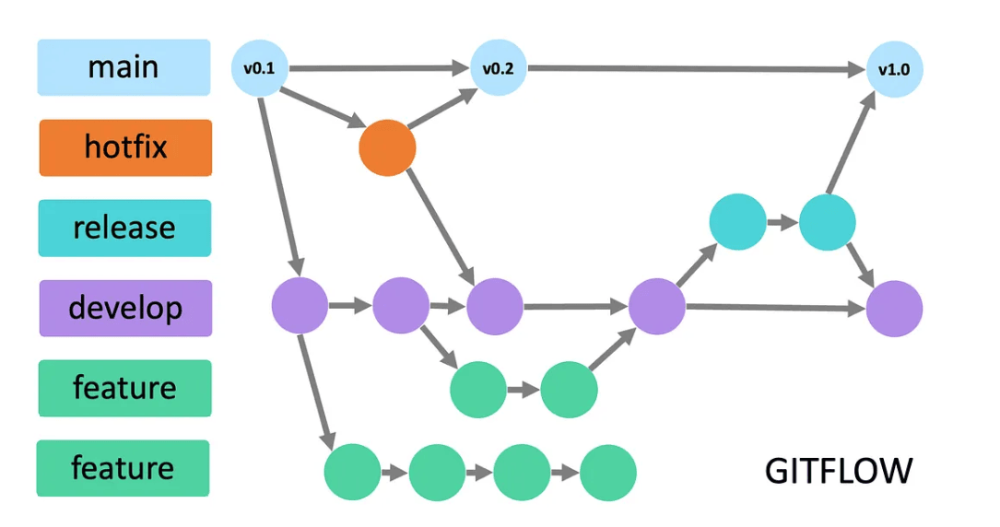
main— основная ветка, содержит стабильный кодrelease/X.Y.Z— ветки для подготовки релизовfeature/*— ветки для разработки новых функций
# Создание релизной ветки от main git checkout -b r1.2.0 # Создание feature-ветки от релизной git checkout -b feature/x r1.2.0 # Работа над фичей и коммиты git add . git commit -m "Add new feature" # Пуш feature-ветки в origin git push -u origin feature/x # Создание pull request через терминал (gh cli) gh pr create --base r1.2.0 --head feature/x --title "Add new feature" --body "Description"Для организации процесса разработки в команде, где нужен контроль над релизами и изолированная разработка новых функций.
Какие долгоживущие ветки типичны для Git Flow?
main(прод),develop(интеграция), плюс временныеfeature/*,release/*,hotfix/*.Зачем ветка
release/*в Git Flow?Стабилизация версии: только багфиксы и подготовка релиза без новых фич.
От какой ветки обычно ответвляют
feature/*в классическом Git Flow?От
develop, а не отmain.Для какого типа команд Git Flow часто избыточен?
Для частых деплоев и сильного CI — проще trunk-based с короткими ветками.
-
Trunk-Based Development (TBD)
Trunk-Based Development — модель ветвления, при которой все разработчики работают с одной основной веткой (trunk, обычно
main). Ветки создаются только на короткое время для изоляции изменений и быстро вливаются обратно.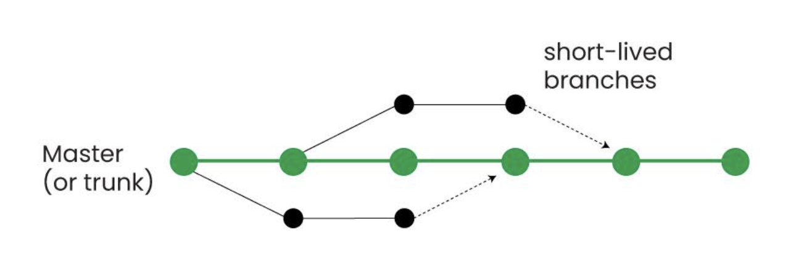
Trunk-Based Development. Есть основная ветка (trunk), на которой всегда есть стабильный код. Короткоживущие ветки (feature, fix) создаются от trunk, живут недолго, мержатся обратно небольшими инкрементами. main— единственная долгоживущая ветка, всегда в состоянии "готово к деплою"- Короткоживущие ветки (feature, fix) — создаются от
main, живут 1–2 дня, мержатся обратно небольшими инкрементами - Требуется сильный CI/CD: автоматические тесты и быстрая обратная связь при каждом коммите в trunk
Подходит для команд с частыми деплоями, хорошим покрытием тестами и желанием минимизировать merge-конфликты. Альтернатива Git Flow при более простом процессе.
Что такое trunk в TBD?
Одна основная ветка (
main), в которую регулярно и небольшими порциями вливают изменения.Как долго должны жить feature-ветки в TBD?
Часы или 1–2 дня — чем короче, тем меньше merge-конфликтов и расхождения с trunk.
Что должно защищать trunk от поломок при частых merge?
Автоматические тесты и CI на каждый коммит или PR.
Чем TBD проще Git Flow в ежедневной работе?
Меньше долгоживущих веток и релизных церемоний — один поток интеграции.
-
Git Flow vs TBD
Метод Описание Особенности Git Flow Модель ветвления с основной веткой main, релизными ветками и feature-ветками.Есть release/*ветки; релиз — отдельный этап; feature могут разрабатываться параллельно неделями.Trunk-Based Development Все изменения быстро интегрируются в одну основную ветку. Ветки используются краткосрочно. Единственная долгоживущая ветка — main; feature-ветки живут 1–2 дня; обязательны CI и автотесты.Ключевое различие Git Flow оптимизирует процесс вокруг релизов, Trunk-Based — вокруг непрерывной интеграции. Git Flow $\to$ контроль и изоляция; TBD $\to$ скорость, минимальный merge debt. Когда выбирать Зависит от зрелости CI/CD, частоты деплоев и требований к стабильности. Git Flow: редкие релизы; TBD: частые деплои, сильный CI. Trunk-Based Development снижает интеграционный долг и ускоряет feedback, но требует зрелой инженерной культуры.
Git Flow проще внедрить, но хуже масштабируется при частых релизах.Когда Git Flow уместнее TBD?
Редкие релизы, несколько поддерживаемых версий, нужна явная стабилизация в
release/*.Когда выбирают TBD вместо Git Flow?
Частые деплои, сильный CI/CD и готовность мержить маленькие PR несколько раз в день.
Что общего у обоих подходов?
Фичи не должны месяцами жить изолированно без интеграции с основной линией.
Можно ли формально использовать «Git Flow», но с короткими ветками?
Да — на практике команды гибридизируют: имена веток из Flow, ритм ближе к TBD.
-
Issues: задачи и баг-репорты
Issues — встроённая система отслеживания задач на GitHub с метками, исполнителями, чек-листами и ссылками на PR.
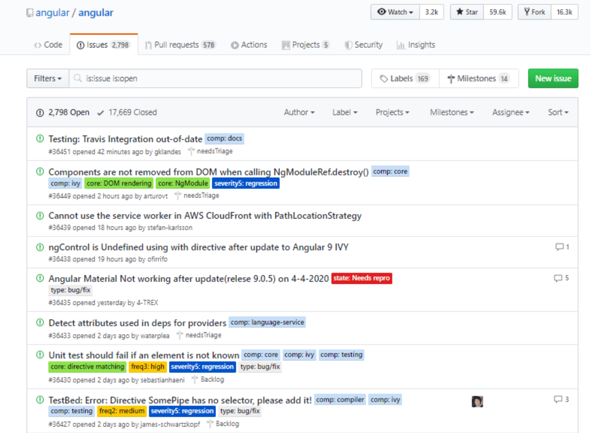
Для постановки задач, обсуждения багов и связывания работы с конкретными изменениями в коде.
В описании PR укажите
Closes #42, чтобы при мерже автоматически закрыть задачу №42.Чем issue отличается от коммита?
Issue — задача или обсуждение на платформе; коммит — изменение в истории Git.
Зачем labels и assignees в issues?
Классификация (bug, enhancement) и явное назначение ответственного.
Как связать PR с задачей автоматически?
Упомянуть issue в описании PR (
Closes #N,Fixes #N).Можно ли вести баг-трекинг только через issues без внешнего Jira?
Да — для многих open-source и небольших команд GitHub Issues достаточно.
-
Переписывание истории
git rebase— это способ переместить коммиты из одной ветки на новую базу (другую точку истории), переписывая историю.Чтобы сделать историю линейной перед merge в
mainили подтянуть свежие изменения без merge-коммитов.# Обновить свою ветку с main git switch feature/x git fetch origin git rebase origin/main # При конфликтах: # 1. Разрешите конфликты в файлах git add <файлы> git rebase --continue # Отменить процесс: git rebase --abortRebase переписывает историю, поэтому опасно использовать его для общих веток, где уже есть чужие коммиты.
Что делает
git rebase mainв feature-ветке?Переносит ваши коммиты поверх актуального
main, переписывая их базу.Чем rebase отличается от merge при подтягивании
main?Rebase даёт линейную историю без merge-коммита; merge сохраняет ветвление и точку слияния.
Почему опасно делать rebase уже запушенной общей ветки?
Меняются hash коммитов — коллегам придётся разбираться с расхождением истории и force-push.
Как продолжить rebase после исправления конфликта?
git addфайлы $\to$git rebase --continue; отмена —git rebase --abort.
-
READMEиLICENSEREADME.mdобъясняет, что делает проект и как им пользоваться;LICENSEопределяет условия использования кода.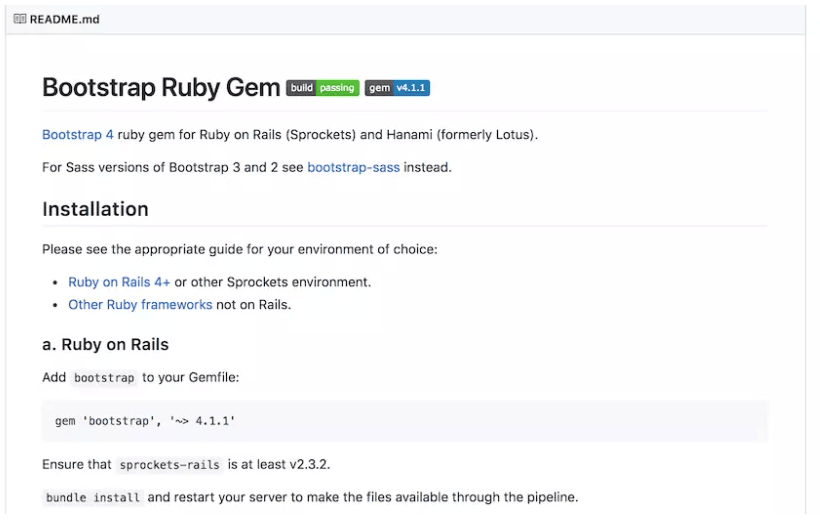
Всегда. Это первое, что видит пользователь/коллега при открытии репозитория.
Зачем в репозитории нужен
README.md?Объясняет назначение проекта, установку и быстрый старт — первое, что видит новый участник.
Что определяет файл
LICENSE?Юридические условия: можно ли использовать, модифицировать и распространять код.
Чем рискует проект без лицензии?
Правовой статус кода неясен — формально использование и форк могут быть ограничены по умолчанию.
Почему README и LICENSE коммитят вместе с кодом?
Они часть «публичного контракта» репозитория и должны версионироваться вместе с проектом.
-
Крупные файлы и Git LFS
Git LFS хранит большие бинарные файлы вне обычной истории Git, оставляя в репо только указатели.
# Установка клиента LFS и инициализация в репо git lfs install git lfs track "*.psd" git add .gitattributes git add path/to/large.psd git commit -m "Track large assets with LFS"Когда нужны большие бинарники (медиа/модели), которые плохо диффятся и раздувают репозиторий.
Что хранит Git LFS в самом репозитории вместо большого файла?
Указатель (pointer) — небольшой текстовый файл; бинарник лежит на LFS-сервере.
Зачем LFS для моделей и медиа?
Обычный Git плохо диффит бинарники и раздувает
.gitпри каждой новой версии весов.Что делает
git lfs track "*.pth"?Добавляет правило в
.gitattributes, чтобы matching-файлы шли через LFS.Нужен ли установленный
git-lfsу всех, кто клонирует репозиторий?Да — без клиента LFS при checkout могут остаться только pointer-файлы вместо реальных данных.